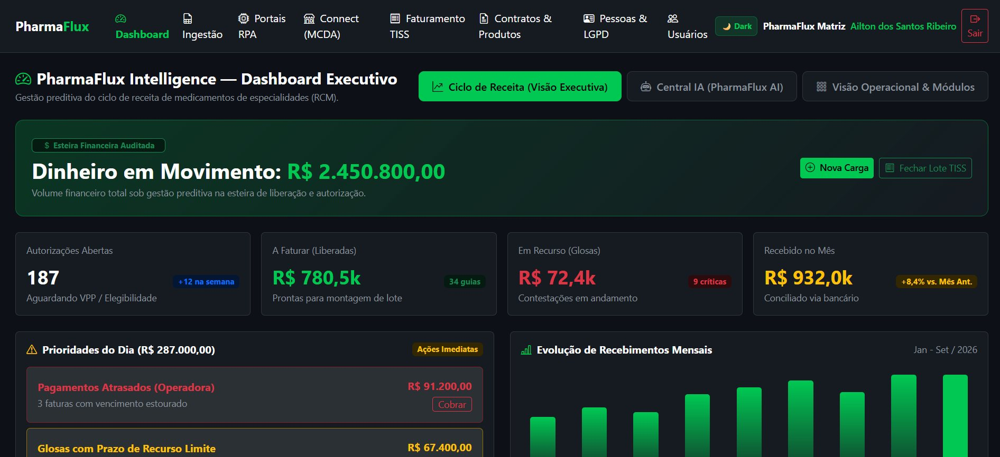
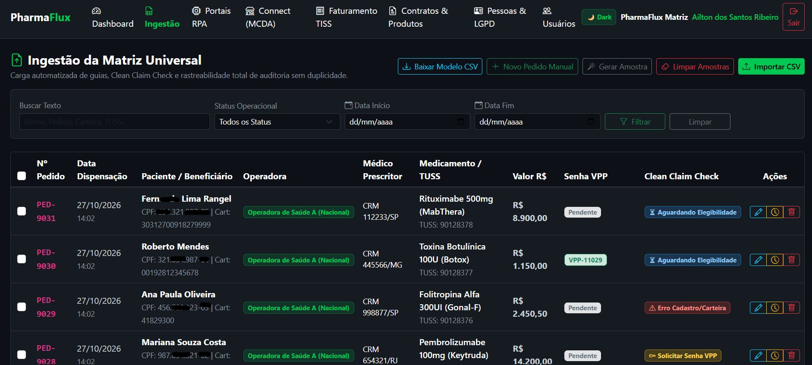
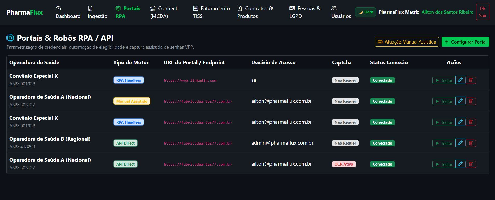
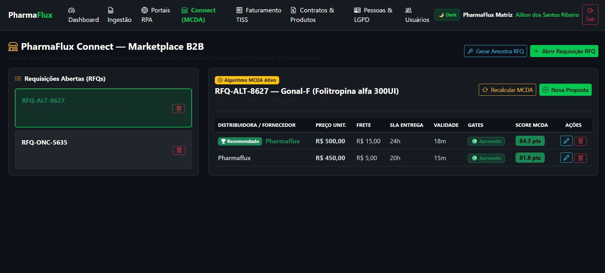
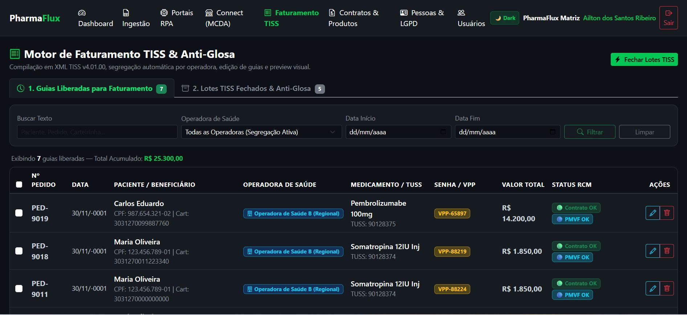
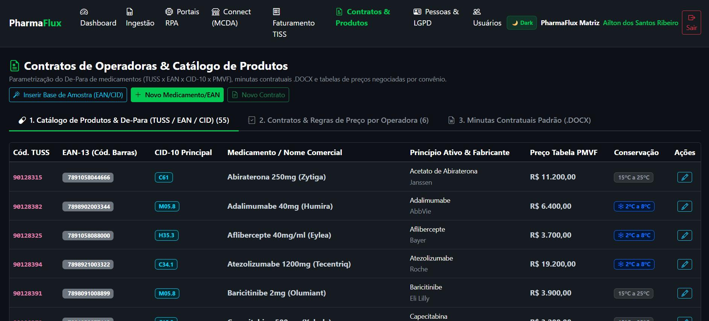
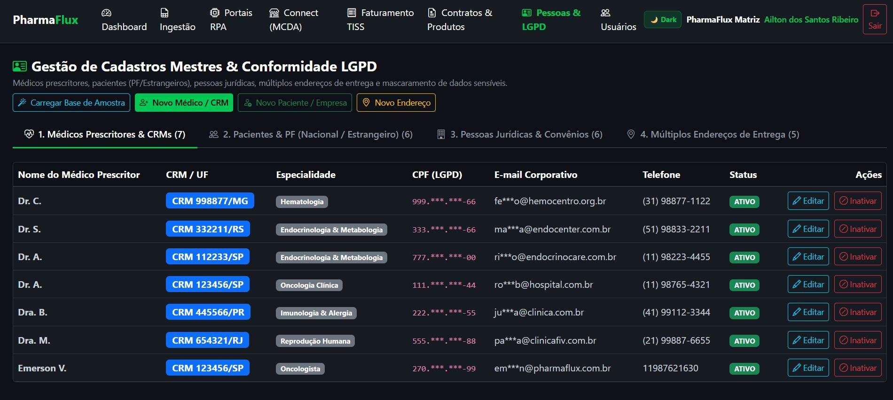

Resumo Executivo
Executivo de Tecnologia da Informação com mais de 25 anos de experiência em liderança estratégica, governança, engenharia de sistemas, infraestrutura, segurança da informação e transformação digital. Trajetória marcada pela integração entre Tecnologia, estratégia corporativa e resultados de negócio em ambientes de alta criticidade.
Líder executivo com reporte direto ao CEO e gestão de estruturas multidisciplinares de até 70 profissionais em 9 frentes especializadas (Produtos, Infraestrutura, Segurança, LGPD, Dev, QA, Integrações, E-commerce e Sustentação). Liderou a conquista da certificação internacional ISO 27001 (05/2025) e projetos inovadores de Inteligência Artificial, RPA, Power Automate e e-commerce Magento.
Liderança & Escala
Gestão de até 70 profissionais reportando diretamente ao CEO. Reestruturação do departamento de TI em 9 squads especializadas e foco no desenvolvimento de sucessores.
Governança & ISO 27001
Conquista da certificação ISO 27001 em 05/2025. Implantação do SGSI, conformidade com a LGPD e estruturação do Plano de Continuidade de Negócios (BCP/DRP).
Inovação & IA
Projetos de Inteligência Artificial, RPA e Power Automate para automação de regras de negócio, e-commerce Magento e integração de APIs no ecossistema de saúde.
Experiência Profissional
Gerente Executivo de Tecnologia da Informação
05/2011 – 07/20264BIO MEDICAMENTOS S/A
- Estruturação e gestão de organização em 9 frentes especializadas com até 70 profissionais e reporte direto ao CEO.
- Liderança do projeto de Segurança e Compliance culminando na certificação internacional ISO 27001 (05/2025).
- Implementação e evolução da plataforma e-commerce Magento (SaaS e On-Premise) e ecossistemas de APIs com operadoras de saúde e PBMs.
- Desenvolvimento de soluções de automação com Inteligência Artificial, RPA e Power Automate para cotações e conciliação financeira.
- Criação da área de Quality Assurance (QA) do zero e estruturação da cultura Data-Driven com Power BI, Tableau e PostgreSQL.
Coordenador de Tecnologia da Informação
04/2006 – 04/2011PORTO FORTE FOMENTO MERCANTIL S/A
- Gestão da infraestrutura tecnológica, sistemas corporativos e padronização de processos de TI.
- Aprimoramento das políticas de backup, segurança da informação e continuidade operacional.
Analista de Suporte Senior / Infraestrutura
03/1997 – 03/2006RIMED COMÉRCIO E REPRESENTAÇÃO
- Administração de redes, servidores, firewalls e suporte N2/N3 a sistemas corporativos e ERPs.
Formação Acadêmica
-
Pós-Graduação em Gestão e Governança de TI
SENAC — 2019 -
Graduação em Gestão de Redes e Internet
UNINOVE — 2009 -
Formação Técnica em Informática
SENAC — 2000
Certificações & Frameworks
Projetos Recentes & Soluções
PharmaFlux
Em Desenvolvimento / HealthTechPlataforma SaaS B2B idealizada para entregas da gestão preditiva do ciclo de receita em medicamentos de especialidades e inteligência anti-glosa. Arquitetura estruturada com módulos de motor de faturamento em conformidade com o padrão TISS, ingestão de matriz universal com validação Clean Claim Check e automação via robôs RPA/API (Headless e Manual Assistido) comunicando-se com portais de operadoras de saúde. O ecossistema abriga também o PharmaFlux Connect, um marketplace B2B equipado com algoritmo MCDA para otimização em requisições de compras. O projeto apresenta uma estética dark-theme com dashboards executivos para acompanhamento financeiro em tempo real e mantém forte compliance com as normas de LGPD (Privacy by Design) no gerenciamento de cadastros e dados sensíveis.
Telas do Sistema

Dashboard Executivo.
Dashboard Executivo — visão do ciclo de receita, glosas em aberto, ticket médio e performance por operadora em tempo real.

Ingestão Matriz Universal.
Ingestão Matriz Universal — importação de extratos e remessas com Clean Claim Check antes do envio à operadora.

Portais e Robôs RPA.
Portais e Robôs RPA — automação de consultas, protocolos e baixas nos portais das operadoras de saúde.

Connect MCDA — Marketplace B2B.
Connect MCDA — Marketplace B2B que conecta deliverys, distribuidoras, hospitais e clínicas em uma única rede.

Faturamento TISS e Anti-Glosa.
Motor de Faturamento TISS e Anti-Glosa — geração de guias, consistência de tabelas e prevenção de glosas.

Contratos e Catálogo de Produtos.
Contratos e Catálogo de Produtos — gestão de contratos, tabelas negociadas e catálogo atualizado por operadora.

Gestão de Cadastros e LGPD.
Gestão de Cadastros e LGPD — base cadastral governada, trilhas de auditoria e conformidade com a LGPD.
Fábrica de Artes 77
Empreendimento / Manufatura 3DEmpreendimento especializado em impressão 3D e fabricação customizada, abrangendo a prototipagem e a construção de modelos detalhados em escala. O fluxo de produção integra desde o refinamento de malhas digitais por meio do Blender, até o fatiamento preciso operado por softwares especializados como Chitubox, OrcaSlicer e Bambu Studio. A infraestrutura física faz uso combinado de impressoras FDM e SLA em resina para garantir excelência no detalhamento das peças. A gestão de relacionamento e orçamentos conta com a orquestração do assistente de inteligência artificial residente, Fabro 77.